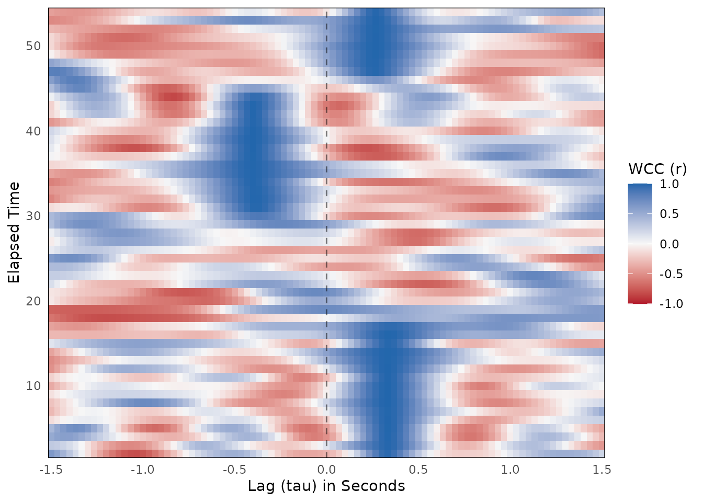
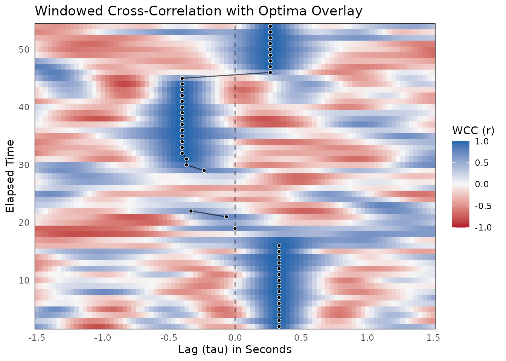

While the bsync package offers multiple methods for quantifying interpersonal synchrony, Windowed Cross-Correlation (WCC) is often the best starting point for continuous behavioral data.
Unlike global cross-correlation, which assumes a relationship remains constant over an entire observation, WCC captures how synchronization ebbs and flows by sliding a finite window across the time series. Within each window, the algorithm tests multiple temporal offsets (lags) to find the highest Pearson correlation.
Note on Parameter Selection: Selecting the right window size and lag parameters is critical for a valid analysis. Before running your own data, we highly recommend reading the
vignette("choosing-parameters")guide to learn how to use thesuggest_wcc_params(),synchrony_multiverse(), andautotune_wcc()helpers.
1. What is Windowed Cross-Correlation?
At its core, WCC measures linear shape and amplitude matching. It asks: if we shift Person B’s signal backward or forward in time by a specific amount, how closely does it resemble Person A’s signal?
1.1 Assumptions and Applicability
When is WCC useful?
- Exploratory Analysis: If you know two people are interacting but you do not know their typical reaction times, WCC searches a wide grid of temporal lags to discover where the coordination actually happens.
- Linear Relationships: It is highly effective for continuous signals like kinematics, facial action units, or vocal pitch where the proportional magnitude of a movement matters.
- Stable Local Delays: It assumes that within any given short window (e.g., 2 to 4 seconds), the reaction delay between the two participants remains relatively constant.
When should you avoid WCC?
- Variable Speeds (Time Warping): If one participant performs a gesture slowly and the other mimics it twice as fast, standard cross-correlation will fail to align them properly. In these cases, Windowed Dynamic Time Warping (WDTW) is a better choice.
- Categorical Data: Pearson correlation requires continuous numeric data. It is not appropriate for binary states or categorical interaction coding.
- Strict Causal Inference: While WCC identifies who moved first (the lag direction), it only measures similarity. If you need rigorous statistical proof that Person A’s movement is actively predicting Person B’s movement, consider using Windowed Granger Causality (WGC).
2. Simulating and Preparing Realistic Data
To demonstrate the workflow, we will simulate a realistic interaction between two participants (Person A and Person B) captured at 30 Hz. We will generate smooth continuous data to simulate bodily motion and then add random measurement noise.
Unlike a perfectly stationary interaction, this scenario mimics natural turn-taking and includes four distinct behavioral phases over the course of 60 seconds:
- Phase 1 (0 to 20s): Person A leads the interaction by 10 frames (0.33 seconds).
- Phase 2 (20 to 30s): An uncorrelated lull where both participants move independently.
- Phase 3 (30 to 46s): Person B takes over and leads by 12 frames (0.40 seconds).
- Phase 4 (46 to 60s): Person A interjects and leads by 8 frames (0.26 seconds).
library(bsync)
library(dplyr)
set.seed(2026)
# Simulation parameters
fs <- 30
n_frames <- 1800 # 60 seconds of data
# 1. Generate underlying rhythms (a shared rhythm and two independent rhythms)
# We use a moving average to create smooth, human-like motion waves
time_seq <- seq(0, by = 1 / fs, length.out = n_frames)
shared_base <- as.numeric(stats::filter(rnorm(n_frames + 300), rep(1 / 15, 15), circular = TRUE))
indep_base_A <- as.numeric(stats::filter(rnorm(n_frames + 300), rep(1 / 15, 15), circular = TRUE))
indep_base_B <- as.numeric(stats::filter(rnorm(n_frames + 300), rep(1 / 15, 15), circular = TRUE))
person_A_raw <- numeric(n_frames)
person_B_raw <- numeric(n_frames)
# 2. Piece together the dyadic interaction
for (i in 1:n_frames) {
if (i <= 600) {
# Phase 1 (0-20s): Person A leads by 10 frames (0.33 seconds)
person_A_raw[i] <- shared_base[150 + i]
person_B_raw[i] <- shared_base[150 + i - 10]
} else if (i <= 900) {
# Phase 2 (20-30s): Lull / No correlation
person_A_raw[i] <- indep_base_A[150 + i]
person_B_raw[i] <- indep_base_B[150 + i]
} else if (i <= 1400) {
# Phase 3 (30-46s): Person B leads by 12 frames (0.40 seconds)
person_A_raw[i] <- shared_base[150 + i - 12]
person_B_raw[i] <- shared_base[150 + i]
} else {
# Phase 4 (46-60s): Person A leads by 8 frames (0.26 seconds)
person_A_raw[i] <- shared_base[150 + i]
person_B_raw[i] <- shared_base[150 + i - 8]
}
}
# 3. Create the raw data frame with added measurement noise
dyad_data_raw <- data.frame(
time = time_seq,
person_A_raw = person_A_raw + rnorm(n_frames, sd = 0.05),
person_B_raw = person_B_raw + rnorm(n_frames, sd = 0.05)
)2.1 Smoothing and Edge Trimming
Raw kinematic data almost always requires smoothing before analysis. Here, we apply a Savitzky-Golay filter to iron out the high-frequency measurement noise.
However, polynomial smoothing algorithms require surrounding data to
calculate an accurate average. This causes mathematical distortion at
the extreme beginning and end of the recording. We use
trim_edges() to drop these edge artifacts to ensure our
analysis is built strictly on stable data. A standard rule of thumb is
to trim a length equal to your smoothing window.
# 4. Smooth the raw data and trim the edges
dyad_data <-
dyad_data_raw |>
mutate(
person_A = smooth_signal(person_A_raw, method = "sgolay", window = 15),
person_B = smooth_signal(person_B_raw, method = "sgolay", window = 15)
) |>
trim_edges(trim_length = 15)3. Calculating Windowed Cross-Correlation
With our data ready, we can run the primary wcc()
function. This function slides a window across the time series and
calculates the cross-correlation at various lags within each window.
We will use a window size of 90 frames (3 seconds) and a maximum lag of 45 frames (1.5 seconds). We will also increment the window by 30 frames (1 second) to allow for overlap and smooth transitions.
wcc_results <- wcc(
x = dyad_data$person_A,
y = dyad_data$person_B,
time = dyad_data$time,
window_size = 90,
lag_max = 45,
window_increment = 30,
lag_increment = 1
)
# View a summary of the results
summary(wcc_results)
#>
#> ── Windowed Cross-Correlation Analysis ─────────────────────────────────────────
#> Total Windows: 53
#> Total Lags Tested: 91
#> Window Size: 90
#> Max Lag: 45
#> Mean Abs. Fisher's Z: 0.452
#>
#> ── Cross-Correlation Value Distribution ──
#>
#> 0% 25% 50% 75% 100%
#> -0.8416 -0.2729 0.0133 0.3984 0.9982The wcc() function returns a list object of class
wcc_res containing the results data frame, the overall
Fisher’s Z score, and the input settings.
We can easily visualize these initial results using the default
plot() method. By passing the time_step
argument, the axes are automatically converted from raw frame indices to
seconds.
plot(wcc_results, time_step = 1 / fs)
This generates a heatmap where deep blue indicates strong positive correlation (synchrony) and deep red indicates strong negative correlation. You can already see a clear track of high correlation shifting across the zero-lag line over time alongside a washed-out period of low correlation in the middle.
3.1 Choosing the aggregate statistic
wcc() reduces the full WCC surface to a single number
via the statistic argument. Two conventions are
available:
"mean_abs_z"(default): The mean of |Fisher’s Z| over every (window × lag) cell in the surface. This is the mean absolute Z from the SUSY toolbox (Tschacher & Meier, 2020) and reflects the average strength of coupling across the entire lag range tested."peak": Within each window, the maximum |Fisher’s Z| across all lags is identified (the strongest lead–lag coupling in that moment). These per-window peaks are then averaged across the recording. This is the best-lag convention used in rMEA and introduced by Boker et al. (2002).
The two statistics answer slightly different questions.
"mean_abs_z" captures average coupling strength over the
full lag range; "peak" highlights the strongest
lag coupling in each window and will always be ≥
"mean_abs_z". Choose based on your research question.
# Default: SUSY mean absolute Z
wcc_maz <- wcc(
x = dyad_data$person_A,
y = dyad_data$person_B,
time = dyad_data$time,
window_size = 90,
lag_max = 45,
window_increment = 30,
statistic = "mean_abs_z" # the default
)
# rMEA best-lag convention
wcc_peak <- wcc(
x = dyad_data$person_A,
y = dyad_data$person_B,
time = dyad_data$time,
window_size = 90,
lag_max = 45,
window_increment = 30,
statistic = "peak"
)
cat("mean_abs_z:", round(wcc_maz$aggregate[[1]], 4), "\n")
#> mean_abs_z: 0.452
cat("peak: ", round(wcc_peak$aggregate[[1]], 4), "\n")
#> peak: 2.3383Important: Always pass the same
statistic to wcc_surrogate() so that the null
distribution is built with the same quantity as the observed value (see
Section 4).
4. Surrogate Testing for Significance
Time series data are inherently autocorrelated. Because of this, high cross-correlation values can sometimes occur purely by chance. To test if the synchronization we observed is meaningful, we evaluate it against a null distribution.
The bsync package uses a two-step pipeline for this.
First, we generate a matrix of “fake” partner data using
generate_surrogate_circular(). (For a deep dive into
different surrogate methods like phase randomization, see
vignette("surrogate-testing")). Second, we evaluate our
real data against this null matrix using
wcc_surrogate().
Accelerating Computation with Parallel Processing:
Running 1,000 permutations can be computationally intensive. Because
each surrogate is evaluated independently, bsync is
built to seamlessly support parallel processing via the
future package. By simply declaring a parallel
plan() before running your analysis, the workload is
distributed across multiple CPU cores, drastically reducing computation
time.
# 1. Set up a parallel plan (e.g., using 4 CPU cores)
library(future)
plan(multisession, workers = 4)
# 2. Generate 1000 surrogate time series for Person B
surrogate_matrix <- generate_surrogate_circular(
y = dyad_data$person_B,
n_surrogates = 1000,
lag_max = 45
)
# 3. Evaluate the observed WCC against the null distribution
surrogate_results <- wcc_surrogate(
x = dyad_data$person_A,
y = dyad_data$person_B,
y_surrogates = surrogate_matrix,
time = dyad_data$time,
window_size = 90,
lag_max = 45,
window_increment = 30,
lag_increment = 1
)
# 4. Return to sequential processing when finished
plan(sequential)
print(surrogate_results)
#> ── WCC Surrogate Analysis (Pseudo-Synchrony) ───────────────────────────────────
#> Permutations: 1000
#> Observed Mean Abs. Fisher's Z: 0.452
#> Average Null Mean Abs. Fisher's Z: 0.3175
#> Empirical p-value: < 0.001
#> ✔ Observed synchrony is significantly greater than chance.The output provides an empirical p-value by calculating the proportion of surrogate Fisher’s Z scores that meet or exceed our observed Fisher’s Z. Because our observed synchrony (Z = 0.4506) was substantially higher than the average chance synchrony (Z = 0.3155) and higher than all 1,000 permutations, the empirical p-value is reported as < .001. This statistically confirms that the coordination we observed between Person A and Person B is driven by genuine interactive behavior rather than the natural autocorrelation of the signals.
5. Optima Extraction
While the heatmap generated above is visually informative, we often
want to extract the precise lags where coordination is strongest within
each time window. The pick_optima() function identifies
local maximums within the WCC grid.
Because our simulation includes a programmed lull where the
participants move independently, the algorithm will naturally find weak,
meaningless “noise peaks” during that period. To prevent the tracking
line from wildly jumping around during this lull, we can pass a
threshold argument.
Setting threshold = 0.55 ensures that any optimum with
an absolute correlation weaker than r = 0.55 is overwritten with
NA.
# Extract optima using a local search size of 9 and a threshold of 0.55
wcc_optima_df <- pick_optima(wcc_results, L_size = 9, threshold = 0.55)
# View a statistical breakdown of the extracted optima
summary(wcc_optima_df)
#>
#> ── WCC Optima Summary ──────────────────────────────────────────────────────────
#>
#> ── Completeness ──
#>
#> • Total time windows: 53
#> • Valid optima retained: 44 (83%)
#> • Optima dropped (NA): 9 (17%)
#>
#> ── Lag Directionality (Leadership) ──
#>
#> • Positive Lags (x leads y): 24 (54.5%)
#> • Negative Lags (y leads x): 19 (43.2%)
#> • Zero Lags (Simultaneous): 1 (2.3%)
#>
#> ── Optimum Value Distribution ──
#>
#> 0% 25% 50% 75% 100%
#> 0.5837 0.9876 0.9932 0.9962 0.99825.1 Interpreting the Optima Summary
The summary() method provides a concise breakdown of the
behavioral dynamics. We can map these results directly to the four
phases we programmed into our simulation:
-
Completeness: The summary shows that 17% (9
windows) of the optima were dropped and set to
NA. This aligns perfectly with Phase 2 of our simulation, which was a 10-second uncorrelated lull. Raising our threshold successfully identified and removed this non-interactive period. -
Lag Directionality (Leadership): Because we
supplied
person_Aasxandperson_Basy, a positive lag means Person A is leading, and a negative lag means Person B is leading. The summary shows positive lags for 54.5% of the valid interaction, reflecting the times Person A led in Phases 1 and 4. It shows negative lags for 43.2% of the interaction, correctly identifying the middle section where Person B took over. - Optimum Value Distribution: The quantiles provide a quick look at the strength of the coordination during the valid interactive phases. With the 25th percentile sitting at \(r = 0.98\), we have absolute confirmation that the retained peaks represent strong, structural synchrony rather than random noise.
5.2 Tuning the Local Search Window (L_size)
Choosing the right L_size is crucial for a successful
local search. L_size must be an odd integer, and it defines
the width of the neighborhood (in frames) that the algorithm evaluates
to confirm a local maximum.
There is a delicate balance to strike:
-
If
L_sizeis too small (e.g., 3): The algorithm might get trapped by tiny noise ripples near lag zero and completely miss the true interactive response. -
If
L_sizeis too large (e.g., 45): The algorithm might skip over the fast, immediate interactive response and lock onto a delayed, mathematically stronger, but theoretically irrelevant rhythm.
A good rule of thumb is to set L_size to capture roughly
0.1 to 0.5 seconds of data. At 30 Hz, an L_size between 5
and 15 frames is usually a great starting point. Because
pick_optima() is computationally lightweight, we recommend
experimenting with several values and visually comparing the plots.
6. Visualizing the Results
We can visually confirm our optima extraction by overlaying the tracking path directly onto the WCC heatmap.
plot_optima_overlay(
surface_obj = wcc_results,
optima_df = wcc_optima_df,
time_step = 1 / fs,
show_zero_lag = TRUE
)
In the resulting plot, the tracking line perfectly visualizes the distinct phases of our simulated interaction:
- 0 to roughly 18 seconds: A stable vertical line sits at a positive lag (~0.33s), correctly identifying Person A as the initial leader.
- 18 to 30 seconds: There is a clean break in the tracking line. Because we applied a threshold, the algorithm successfully ignored the weak, random noise peaks during the uncorrelated lull, leaving this non-interactive period appropriately blank.
- 30 to 45 seconds: The tracking line reappears on the left side of the zero-line at a negative lag (~ -0.40s), perfectly capturing Phase 3 where Person B takes the lead.
- 46 seconds onward: The tracking line jumps back to the right side of the zero-line as Person A reclaims the lead for the final phase of the interaction.
7. Quantifying Leadership Dynamics
Visualizing the optima is helpful, but researchers ultimately need a
continuous, quantifiable metric of who is driving the interaction. The
leadership_asymmetry() function converts the extracted
optima into a bounded Leadership Asymmetry Index (LAI) ranging from -1
(y entirely leads) to 1 (x entirely leads).
Because bsync is designed around a consistent class
structure, you can seamlessly chain the entire analytical process
together using the native R pipe (|>):
# Run the complete pipeline from WCC results to LAI visualization
wcc_results |>
pick_optima(L_size = 9, threshold = 0.55) |>
leadership_asymmetry(epoch_size = 10, min_valid = 3) |>
plot(smooth = TRUE)
#> `geom_smooth()` using formula = 'y ~ x'
By grouping the windows into local epochs (in this case, groups of 10 windows), the LAI function smooths over momentary frame-by-frame jitter to reveal the broader structural periods of dominance.
The resulting plot tells the entire story of the interaction at a
glance. The metric starts firmly at 1.0 (Person A leading),
smoothly transitions down through zero during the uncorrelated lull,
hits -1.0 (Person B leading) right at the 30-second mark,
and finally climbs back up to 1.0 as Person A re-enters the
conversation.
8. Tidy Interface
All bsync estimator results support a tidy workflow
via tidy(), glance(), and
as_tibble().
# One row per surface cell (full windowed results_df as a tibble)
surface_tbl <- generics::tidy(wcc_results)
head(surface_tbl)
#> # A tibble: 6 × 3
#> i tau wcc
#> <dbl> <int> <dbl>
#> 1 2 -45 0.634
#> 2 3 -45 0.292
#> 3 4 -45 0.511
#> 4 5 -45 0.419
#> 5 6 -45 -0.124
#> 6 7 -45 -0.301
# One-row summary: aggregate statistic(s) + key settings
generics::glance(wcc_results)
#> # A tibble: 1 × 7
#> mean_abs_z n_windows window_size window_increment lag_max lag_increment
#> <dbl> <int> <dbl> <dbl> <dbl> <dbl>
#> 1 0.452 53 90 30 45 1
#> # ℹ 1 more variable: statistic <chr>glance() is especially useful for comparing several runs
in a single data frame:
wcc_maz2 <- wcc(
x = dyad_data$person_A,
y = dyad_data$person_B,
time = dyad_data$time,
window_size = 90,
lag_max = 45,
window_increment = 30,
statistic = "mean_abs_z"
)
wcc_peak2 <- wcc(
x = dyad_data$person_A,
y = dyad_data$person_B,
time = dyad_data$time,
window_size = 90,
lag_max = 45,
window_increment = 30,
statistic = "peak"
)
dplyr::bind_rows(
generics::glance(wcc_maz2),
generics::glance(wcc_peak2)
)
#> # A tibble: 2 × 8
#> mean_abs_z n_windows window_size window_increment lag_max lag_increment
#> <dbl> <int> <dbl> <dbl> <dbl> <dbl>
#> 1 0.452 53 90 30 45 1
#> 2 NA 53 90 30 45 1
#> # ℹ 2 more variables: statistic <chr>, peak <dbl>